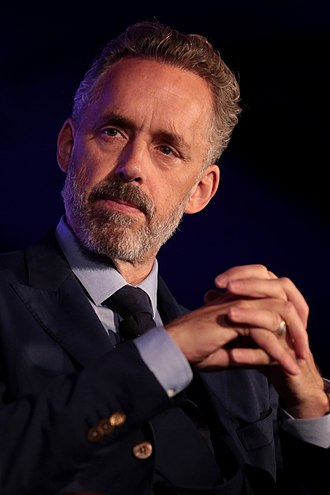
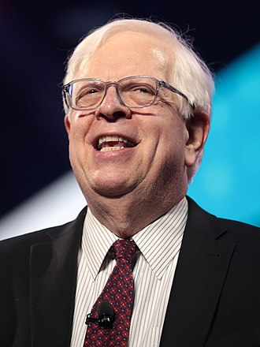
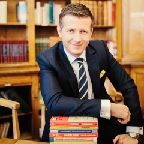

Jordan Bernt Peterson (born 12 June 1962) is a Canadian media personality, clinical psychologist, author, and professor emeritus at the University of Toronto. He began to receive widespread attention as a public intellectual in the late 2010s for his views on cultural and political issues, often described as conservative.
Dennis Mark Prager (born August 2, 1948) is an American conservative radio talk show host and writer. He is the host of the nationally syndicated radio talk show The Dennis Prager Show. In 2009, he co-founded PragerU, which creates five-minute videos from an American conservative perspective.
Lorand Soares Szasz is a hungarian entrepreneur, bussiness grouth expert, international speaker, book author and CEO of upriserz.ro.
